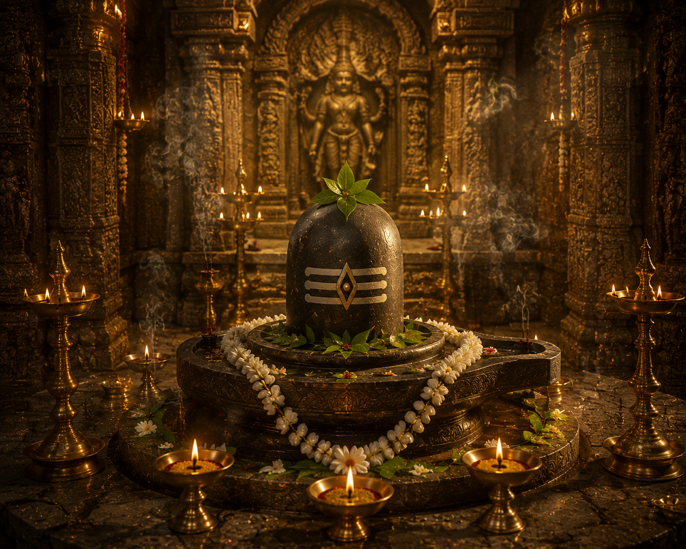

శ్రీ మహాకాళేశ్వర జ్యోతిర్లింగ దేవాలయం
భారతీయ సనాతన ధర్మ పుణ్యక్షేత్రం

౧. పరిచయం
మధ్యప్రదేశ్ రాష్ట్రంలోని ఉజ్జయిని నగరంలో పవిత్రమైన శిప్రా నది తీరాన వెలసిన శ్రీ మహాకాళేశ్వర జ్యోతిర్లింగ దేవాలయం ద్వాదశ జ్యోతిర్లింగాలలో మూడవదిగా ప్రసిద్ధి చెందింది. కాలానికి అధిపతిగా, మరణాన్ని సైతం నియంత్రించే పరమశివుని మహాకాళేశ్వరుడు అనే రూపాన్ని ఇక్కడ భక్తులు ఆరాధిస్తారు.
౨. క్షేత్ర మహిమ
శ్రీ మహాకాళేశ్వరుని దర్శించడం వల్ల భయాలు తొలగి, ఆయురారోగ్యాలు, మనశ్శాంతి మరియు శివానుగ్రహం లభిస్తాయని పురాణాలు పేర్కొంటాయి.
ఈ జ్యోతిర్లింగం దక్షిణాభిముఖంగా ఉన్న ఏకైక జ్యోతిర్లింగంగా ప్రసిద్ధి చెందింది. తాంత్రిక సంప్రదాయంలో దీనికి విశిష్ట స్థానం ఉంది.
ఈ జ్యోతిర్లింగం దక్షిణాభిముఖంగా ఉన్న ఏకైక జ్యోతిర్లింగంగా ప్రసిద్ధి చెందింది. తాంత్రిక సంప్రదాయంలో దీనికి విశిష్ట స్థానం ఉంది.
౩. మహాకాళేశ్వర జ్యోతిర్లింగ ఆవిర్భావం – పురాణ నేపథ్యం
పురాణాల ప్రకారం ఉజ్జయినిలో వేదప్రియుడు అనే బ్రాహ్మణుడు తన కుమారులతో కలిసి పరమశివుని భక్తితో ఆరాధించేవాడు.
ఆ సమయంలో దూషణుడు అనే రాక్షసుడు ఆ ప్రాంత ప్రజలను, ఋషులను హింసించసాగాడు. భక్తుల ప్రార్థన విని పరమశివుడు భూమిని చీల్చుకుంటూ ఉగ్రరూపంలో ప్రత్యక్షమై దూషణుడిని సంహరించాడు.
భక్తుల కోరిక మేరకు అదే ప్రదేశంలో జ్యోతిర్లింగ రూపంలో వెలసి మహాకాళేశ్వరుడుగా కొలువుదీరాడు.
ఆ సమయంలో దూషణుడు అనే రాక్షసుడు ఆ ప్రాంత ప్రజలను, ఋషులను హింసించసాగాడు. భక్తుల ప్రార్థన విని పరమశివుడు భూమిని చీల్చుకుంటూ ఉగ్రరూపంలో ప్రత్యక్షమై దూషణుడిని సంహరించాడు.
భక్తుల కోరిక మేరకు అదే ప్రదేశంలో జ్యోతిర్లింగ రూపంలో వెలసి మహాకాళేశ్వరుడుగా కొలువుదీరాడు.
౪. ఆలయ చరిత్ర
మహాకాళేశ్వర ఆలయం ప్రాచీన భారతదేశంలోని ప్రముఖ శైవక్షేత్రాలలో ఒకటి. శివ పురాణం, స్కాంద పురాణం మరియు అనేక చారిత్రక గ్రంథాలలో ఈ క్షేత్ర ప్రస్తావన కనిపిస్తుంది.
చరిత్రలో ఆలయం అనేకసార్లు దండయాత్రలకు గురైనప్పటికీ, మరాఠా పాలకులు ముఖ్యంగా సింధియా వంశస్థులు దీనిని పునర్నిర్మించి అభివృద్ధి చేశారు.
చరిత్రలో ఆలయం అనేకసార్లు దండయాత్రలకు గురైనప్పటికీ, మరాఠా పాలకులు ముఖ్యంగా సింధియా వంశస్థులు దీనిని పునర్నిర్మించి అభివృద్ధి చేశారు.
౫. ఆలయ నిర్మాణ విశేషాలు
ఆలయం నాగర శిల్పకళా శైలిలో నిర్మించబడింది.
గర్భగుడిలో స్వయంభూ జ్యోతిర్లింగం కొలువై ఉంది.
జ్యోతిర్లింగం దక్షిణ దిశను అభిముఖంగా ఉండటం ప్రత్యేకత.
ఆలయం బహుళ అంతస్తులతో నిర్మించబడింది.
శివపార్వతి, గణపతి, కార్తికేయ స్వామివారికి ప్రత్యేక సన్నిధులు ఉన్నాయి.
గర్భగుడిలో స్వయంభూ జ్యోతిర్లింగం కొలువై ఉంది.
జ్యోతిర్లింగం దక్షిణ దిశను అభిముఖంగా ఉండటం ప్రత్యేకత.
ఆలయం బహుళ అంతస్తులతో నిర్మించబడింది.
శివపార్వతి, గణపతి, కార్తికేయ స్వామివారికి ప్రత్యేక సన్నిధులు ఉన్నాయి.
౬. ముఖ్య దర్శనీయ స్థలాలు
శ్రీ మహాకాళేశ్వర జ్యోతిర్లింగం
శిప్రా నది
హరసిద్ధి అమ్మవారి ఆలయం
కాలభైరవ స్వామి ఆలయం
చింతామణి గణపతి దేవాలయం
సందీపని మహర్షి ఆశ్రమం
శిప్రా నది
హరసిద్ధి అమ్మవారి ఆలయం
కాలభైరవ స్వామి ఆలయం
చింతామణి గణపతి దేవాలయం
సందీపని మహర్షి ఆశ్రమం
౭. నిత్య సేవలు
భస్మ హారతి
మహాభిషేకం
రుద్రాభిషేకం
అర్చన
మహా మంగళ హారతి
శయన హారతి
మహాభిషేకం
రుద్రాభిషేకం
అర్చన
మహా మంగళ హారతి
శయన హారతి
౮. ప్రధాన ఉత్సవాలు
మహా శివరాత్రి
శ్రావణ మాస ఉత్సవాలు
కార్తీక మాసోత్సవాలు
నాగపంచమి
ప్రదోష పూజలు
శ్రావణ మాస ఉత్సవాలు
కార్తీక మాసోత్సవాలు
నాగపంచమి
ప్రదోష పూజలు
౯. నేటి మహాకాళేశ్వరం
నేడు ఉజ్జయిని భారతదేశంలోని ప్రముఖ శైవ యాత్రా కేంద్రాలలో ఒకటిగా ప్రసిద్ధి చెందింది. ప్రతి సంవత్సరం లక్షలాది మంది భక్తులు మహాకాళేశ్వర స్వామివారిని దర్శించి ముఖ్యంగా భస్మ హారతిలో పాల్గొంటారు.
౧౦. యాత్రికులకు సమాచారం
స్థానం
ఉజ్జయిని, మధ్యప్రదేశ్.
చేరుకునే మార్గాలు
రైలుమార్గం: ఉజ్జయిని జంక్షన్.
విమాన మార్గం: ఇండోర్ విమానాశ్రయం.
రోడ్డు మార్గం: మధ్యప్రదేశ్లోని ప్రధాన నగరాల నుండి సులభ రవాణా సౌకర్యం ఉంది.
ఉజ్జయిని, మధ్యప్రదేశ్.
చేరుకునే మార్గాలు
రైలుమార్గం: ఉజ్జయిని జంక్షన్.
విమాన మార్గం: ఇండోర్ విమానాశ్రయం.
రోడ్డు మార్గం: మధ్యప్రదేశ్లోని ప్రధాన నగరాల నుండి సులభ రవాణా సౌకర్యం ఉంది.
౧౧. దర్శనం మరియు సేవల నమోదు
అధికారిక వెబ్సైట్
https://shrimahakaleshwar.com
అందుబాటులో ఉన్న సేవలు
దర్శన నమోదు
భస్మ హారతి నమోదు
పూజల నమోదు
వసతి వివరాలు
దాన సేవలు
ఉత్సవాల సమాచారం
https://shrimahakaleshwar.com
అందుబాటులో ఉన్న సేవలు
దర్శన నమోదు
భస్మ హారతి నమోదు
పూజల నమోదు
వసతి వివరాలు
దాన సేవలు
ఉత్సవాల సమాచారం
౧౨. ఆసక్తికర విషయాలు
ద్వాదశ జ్యోతిర్లింగాలలో మూడవ జ్యోతిర్లింగం.
దక్షిణాభిముఖంగా ఉన్న ఏకైక జ్యోతిర్లింగం.
ప్రతిరోజూ తెల్లవారుజామున జరిగే భస్మ హారతి ప్రపంచ ప్రసిద్ధి పొందింది.
ఉజ్జయిని సప్త మోక్షపురాలలో ఒకటిగా పరిగణించబడుతుంది.
ప్రతి పన్నెండు సంవత్సరాలకు ఒకసారి జరిగే సింహస్థ కుంభమేళా ఉజ్జయినిలోనే నిర్వహించబడుతుంది.
ఈ జ్యోతిర్లింగం స్వయంభూ లింగంగా భావించబడుతుంది.
దక్షిణాభిముఖంగా ఉన్న ఏకైక జ్యోతిర్లింగం.
ప్రతిరోజూ తెల్లవారుజామున జరిగే భస్మ హారతి ప్రపంచ ప్రసిద్ధి పొందింది.
ఉజ్జయిని సప్త మోక్షపురాలలో ఒకటిగా పరిగణించబడుతుంది.
ప్రతి పన్నెండు సంవత్సరాలకు ఒకసారి జరిగే సింహస్థ కుంభమేళా ఉజ్జయినిలోనే నిర్వహించబడుతుంది.
ఈ జ్యోతిర్లింగం స్వయంభూ లింగంగా భావించబడుతుంది.
౧౩. ఆధారాలు
గ్రంథ ఆధారాలు
శివ పురాణం – కోటి రుద్ర సంహిత
స్కాంద పురాణం
లింగ పురాణం
మహాభారతం
అధికారిక ఆధారాలు
శ్రీ మహాకాళేశ్వర దేవస్థాన ప్రచురణలు
శ్రీ మహాకాళేశ్వర దేవస్థానం అధికారిక వెబ్సైట్
శివ పురాణం – కోటి రుద్ర సంహిత
స్కాంద పురాణం
లింగ పురాణం
మహాభారతం
అధికారిక ఆధారాలు
శ్రీ మహాకాళేశ్వర దేవస్థాన ప్రచురణలు
శ్రీ మహాకాళేశ్వర దేవస్థానం అధికారిక వెబ్సైట్
౧౪. ముగింపు
శ్రీ మహాకాళేశ్వర జ్యోతిర్లింగం కాలానికి అతీతమైన పరమశివుని మహిమను చాటిచెప్పే మహాపుణ్యక్షేత్రం. భక్తుల రక్షణ కోసం మహాకాళ స్వరూపంలో వెలసిన పరమశివుడు నేటికీ కోట్లాది మంది భక్తులకు ఆశ్రయంగా నిలుస్తున్నాడు.
"కాలాన్ని జయించిన మహాకాళేశ్వరుని కరుణా కటాక్షం భక్తుల జీవితాలకు ధైర్యం, శాంతి మరియు ముక్తిని ప్రసాదిస్తుంది."
"కాలాన్ని జయించిన మహాకాళేశ్వరుని కరుణా కటాక్షం భక్తుల జీవితాలకు ధైర్యం, శాంతి మరియు ముక్తిని ప్రసాదిస్తుంది."
✦ సర్వే జనాః సుఖినో భవంతు ✦